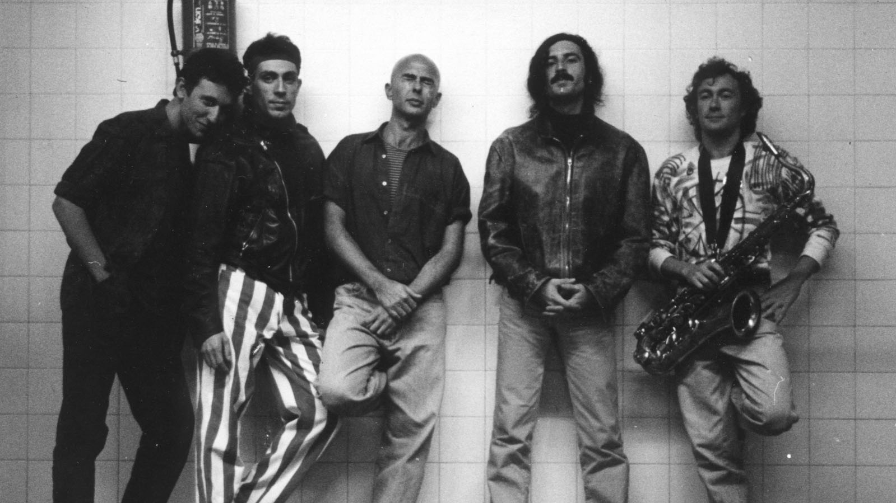
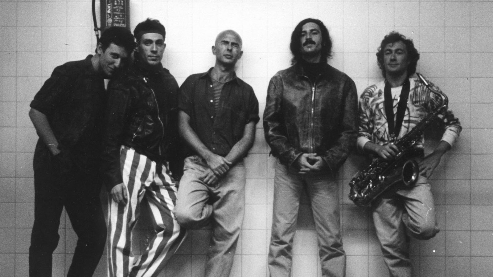

Oktubre
Las 5 canciones más escuchadas del álbum:
Sobre el álbum
Oktubre es un disco emblemático lanzado en 1986 por Patricio Rey y sus Redonditos de Ricota. Su lírica oscura, la estética post-punk, los sintetizadores intensos y su actitud contracultural lo convirtieron en una obra de culto del rock argentino. El álbum incluye himnos como "Ji ji ji", cuya popularidad traspasó generaciones, y se volvió un ícono de los recitales en vivo del Indio Solari. Además, sus letras están cargadas de crítica social y poesía urbana, fiel al estilo críptico de la banda.
Imágenes
 
